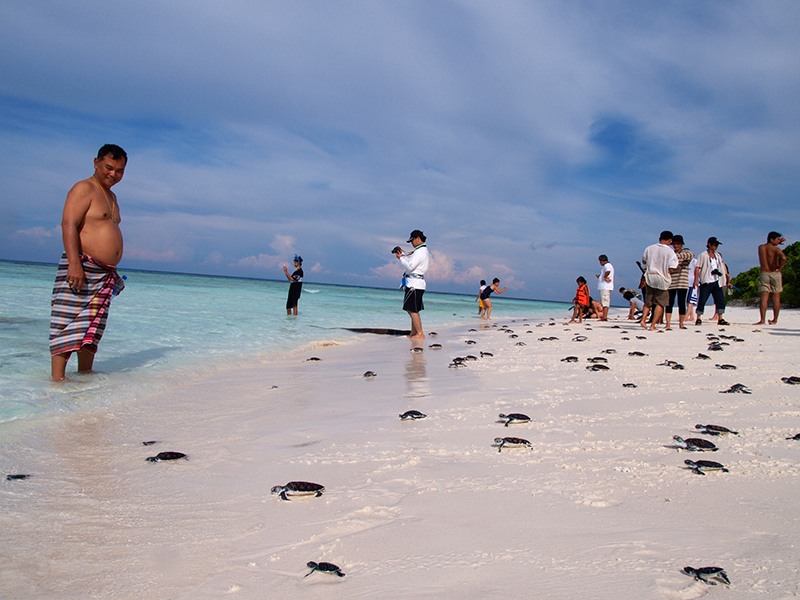

Atlantic & Gulf coast nesting stronghold
Florida hosts the largest concentration of loggerhead sea turtle nests in the Western Hemisphere and serves as critical habitat for green turtles and leatherbacks as well. The state's 800+ miles of coastline face growing pressure from coastal development, red tide events, and warming sand temperatures. The Marine Turtle Foundation works with Florida conservatories from the Archie Carr National Wildlife Refuge on the Atlantic coast to the Gulf Islands to protect nesting beaches and address threats that extend far beyond the shoreline.
Beach monitoring, hatchery protection & rescue
Loggerhead, green & leatherback sea turtles
200+ volunteers, researchers & wildlife officers
Our Florida conservatory program focuses on three core areas: nest protection, stranding response, and habitat restoration. During nesting season from March through October, volunteer teams survey beaches at dawn to identify and mark new nests. Hatcheries protect vulnerable clutches from predators and storm surge, while temperature loggers track sand conditions that determine hatchling sex ratios, a growing concern as climate change skews populations toward females.

Florida accounts for the largest share of loggerhead nests in the Western Hemisphere, with the Archie Carr National Wildlife Refuge on the Atlantic coast serving as the most important single stretch of nesting habitat. Loggerheads take decades to reach maturity and may travel thousands of miles between feeding and nesting grounds. Protecting Florida beaches means protecting a population that shapes the species' global outlook.
Green turtles and leatherbacks also nest in significant numbers along both coasts. Each species requires slightly different management. Loggerhead nests are often left in place with predator exclusion cages. Green turtle nests in areas of heavy erosion may be relocated. Leatherback nests, laid in deep chambers by the largest turtles in the world, need wide open beach with minimal disturbance.
Florida's stranding network is one of the busiest in the world. MTF supports rapid-response teams that rescue injured turtles affected by boat strikes, fishing gear entanglement, and harmful algal blooms. Recovered turtles receive veterinary care at partner rehabilitation facilities before release back to the wild. Every stranding event is documented because the data reveal patterns: where boat traffic is most dangerous, which months see the highest entanglement rates, and how red tide years affect survival.
Conservation here goes well beyond the beach. We fund seagrass meadow restoration in the Indian River Lagoon, a vital foraging ground for green turtles, and work with coastal municipalities to implement turtle-friendly lighting ordinances that reduce hatchling disorientation. Educational outreach reaches thousands of Florida students each year through classroom programs and field trips to active nesting sites.
Florida's dual coastlines mean that our work spans the Gulf of Mexico and the Atlantic, two very different marine environments connected by the movements of the turtles themselves. A green turtle foraging in the Gulf today may nest on an Atlantic beach next season. Regional thinking is not optional here. It is the only approach that matches how turtles actually live.